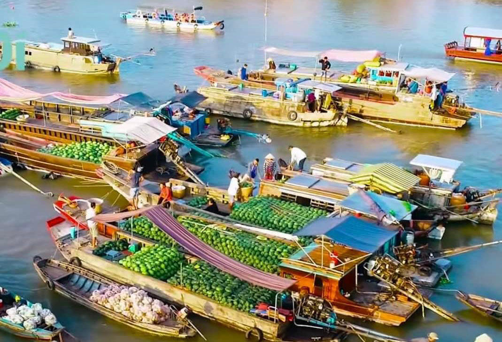

Một buổi sáng trên sông Cần Thơ là đủ để cảm nhận nhịp sống miền Tây: ghe thuyền tấp nập, cây bẹo đong đưa trong nắng sớm và những tô bún nóng hổi giữa làn nước hiền hòa.
Nằm trên nhánh sông Cần Thơ, Chợ nổi Cái Răng là một trong những điểm đến biểu tượng của Đồng bằng sông Cửu Long. Nơi đây không chỉ là điểm giao thương nông sản mà còn là không gian lưu giữ lối sống, tập quán buôn bán và tinh thần phóng khoáng của miền Tây Nam Bộ.
Điều làm nên sức hút của chợ không nằm ở sự cầu kỳ, mà ở vẻ mộc mạc rất đời: tiếng máy ghe, mùi trái cây chín, món ăn sáng nóng hổi và nụ cười thân thiện của người dân bản địa. Nếu muốn cảm nhận một Cần Thơ thật nhất, đây là nơi rất đáng để bắt đầu.

Bầu trời trong, nắng vàng nhẹ và khung cảnh chợ rộn ràng tạo nên bức tranh rất riêng của miền sông nước.
Không gian giao thương vẫn giữ được nét tự nhiên, giúp du khách vừa tham quan vừa hiểu thêm đời sống bản địa.
Màu sắc ghe thuyền, hàng hóa và ánh sáng buổi sớm mang lại những khung hình vừa chân thật vừa giàu cảm xúc.
Không chỉ là điểm check-in nổi tiếng, chợ còn mang đến một chuỗi trải nghiệm rất sống động. Mỗi chiếc ghe, mỗi món hàng, mỗi nhịp nước đều góp phần kể câu chuyện về văn hóa sông nước Cần Thơ.
Khoảng 5 giờ đến 8 giờ sáng là lúc chợ đông nhất, cũng là lúc ánh sáng đẹp và không khí mát mẻ nhất để đi tham quan.
Người bán treo mặt hàng lên cây sào trên ghe để khách nhìn từ xa là biết đang bán gì. Đây là nét nhận diện rất đặc trưng của chợ nổi.
Thưởng thức bún riêu, hủ tiếu hay ly cà phê kho ngay trên thuyền là trải nghiệm vừa gần gũi vừa khó quên với nhiều du khách.
Nếu bạn đi lần đầu, lịch trình ngắn dưới đây sẽ giúp chuyến đi vừa đủ thư thả để ngắm cảnh, vừa đủ nhiều trải nghiệm để cảm nhận đúng tinh thần Cái Răng.
Đi sớm để đón bình minh và tránh nắng gắt. Đây cũng là khoảng thời gian ghe thuyền vào chợ nhộn nhịp nhất.
Quan sát cảnh buôn bán, cây bẹo, những ghe đầy trái cây và cách người dân trao đổi hàng hóa trên sông.
Chọn một ghe bán món nóng như bún, hủ tiếu hoặc cà phê. Đây thường là khoảnh khắc được du khách yêu thích nhất.
Nếu đi tour dài hơn, bạn có thể kết hợp thêm một điểm tham quan gần đó để chuyến đi trọn vẹn hơn.
Nếu bạn thấy website hữu ích, hãy ủng hộ một ly cà phê để nhóm có thêm động lực phát triển.
 Quét mã QR hoặc nhấn vào ảnh để ủng hộ.
Quét mã QR hoặc nhấn vào ảnh để ủng hộ.
Đánh giá từ du khách
Hãy chia sẻ cảm nhận của bạn về vẻ đẹp và trải nghiệm tại Chợ Nổi Cái Răng để những người đi sau có thêm gợi ý nhé.